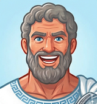

←
Volver a Platón 6

Listado de sitios
Todos los subsitios disponibles en este portal
Cursos y talleres
Aprende Dactilografía
Método por niveles (estilo TypingClub) con manos virtuales y teclado por colores.
Taller de Recursos Digitales Interactivos
Curso para crear recursos digitales interactivos con IA.
Calen English Class
Panel de control para clases de inglés en vivo, para la Escuela de Calen (Chiloé).
Ajedrez
Tablero libre — mueve las piezas donde quieras o sácalas fuera del tablero.
Práctica conmigo
Videos para practicar batería siguiendo videos de YouTube.
Trabajos USACH
Porcentaje
Introducción al concepto de porcentaje.
Multiplicación de Fracciones
Recurso interactivo de fracciones.
Dispersión de datos
Explorando la dispersión de datos.
Microscopio
Desenfoque de enfoque del lente.
Diferencial de una Función
Simulador dy vs Δy y pantalla dividida de Seno y Coseno.
Ideas sueltas
Evaluación Adaptativa de Álgebra
Test de álgebra (sistemas de ecuaciones, matrices, etc.) sin alternativas que adapta su nivel en tiempo real. Incluye panel de profesor.
Recurso de prueba
Recurso de matemática — varias pruebas y ejercicios interactivos.
Tabla de multiplicar colaborativa
Teducas — tabla de multiplicar en vivo.
Máquina de Galton
Simulación interactiva de un tablero de Galton y la distribución normal.
Mapa Mundial
Mapa político interactivo del mundo, con vista low-poly y datos por país.